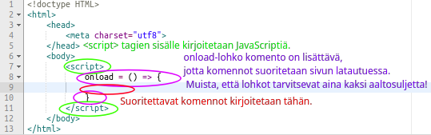

Osa 2. - JavaScriptin alkeet
Mikä ihmeen JavaScript?
Ensimmäisessa osassa harjoittelimme tekemään tavallisen HTML-sivun. Nyt aloitamme tutustumisen JavaScriptiin. JavaScriptiä käytetään yhdessä HTML-kielen kanssa. JavaScriptillä kirjoitetaan erityisiä skriptejä, joilla voidaan saada tapahtumia aikaan sivulla.
Aloitetaan JavaScriptin harjoittelu tutustumalla peruskomentoihin. Komennot kertovat JavaScriptin kääntäjälle, mitä haluamme tehdä. Komennot voivat tuntua aluksi oudoilta, mutta niiden merkitys selvenee, kun niitä käyttää.
Tehtävä 2.1
Kirjoita alert("") komennon sisälle lainausmerkkien ("") väliin nimesi ja paina kuvaketta .
Ensimmäisessä tehtävässä käytettiin komentoa alert(""). alert("")
komento on JavaScriptin tuntema komento. Kaikki komennot,
joita haluamme JavaScriptin tunnistavan annetaan <script>
tagien sisälle, kuten myös edellisessä tehtävässä tehtiin.
Lisäksi haluamme kertoa, että kirjoitetut JavaScript komennot suoritetaan heti
kun sivu lataa. Siksi meidän tulee lisätä
<script> tagien sisälle myös onload = () =>{}.
Tälläistä komentoa kutsutaan lohkoksi, sillä siinä on
kaksi aaltosulkua {}, jotka muodostavat yhdessä lohkon, jonka sisälle voimme kirjoittaa komentoja.
Tähän asti opitut asiat tiivistettynä yhdessä kuvassa:
Olemme siis nyt oppineet, minne HTML-tiedostossa kirjoitetaan JavaScript-komennot.
Tehtävä 2.2
Kirjoita alert("Heipä hei!") komento oikeaan kohtaan koodissa.
Tehtävä 2.3
Kirjoita ohjelma, joka tulostaa "JavaScript on kivaa."
Ensimmäinen komento, jonka opettelimme on alert("")-komento.
Tällä komennolla voimme tulostaa tekstiä ikkunoissa ruudulle.
Komento alert("") saa parametrina merkkijonon.
Tämä on ohjelmoijan käyttämää kieltä. Puhumme parametreista, kun haluamme
antaa jonkinlaista tietoa ohjelmalle. Merkkijono tarkoittaa tekstimuotoista tietoa.
Esimerkiksi tälle sivulle kirjoitettu teksti on merkkijono tyyppistä tietoa.
Tekstimuotoinen syöte eli merkkijono parametri, annetaan komennolle kirjoittamalla se
lainausmerkkien sisälle.
Uusi komento prompt();
Nyt osaamme tulostaa tietoa. Opetellaan seuraavaksi, miten voimme myös kysyä käyttäjältä syöteen. Syöte on tietoa, jota tietokone osaa käsitellä. Esimerkiksi, kun kirjoitat JavaScript ohjelmia näppäimistöllä annat koko ajan syötteenä tietokoneelle tietoa kirjoittamistasi merkeistä näppäimistön avulla.
Syötteen kysymyinen tapahtuu prompt() komennolla.
Esimerkki 2.1
Tähän ohjelmaan on kirjoitettu prompt()-komento. Kokeile, mitä tapahtuu, kun klikkaat lippukuvaketta.
prompt()-komento avaa ikkunan, jossa on teksti kenttä johon voi kirjoittaa tekstiä.
Kun klikkaa "Hyväksy"-painiketta, niin JavaScript lukee syötteen. Pelkällä komennolla
emme kuitenkaan saa vielä syötettyä tietoa käyttöön. Meidän tulee tallettaa se muuttujaan.
Tehtävä 2.5
Kirjoita prompt()-komento oikeaan kohtaan koodissa.
prompt();-komennolle voidaan antaa parametri samalla tavalla, kuin
alert();-komennolle. Tällöin komentoon lisätään sulkeiden sisään lainausmerkit,
joiden sisään kirjoitetaan haluttu parametri. Komento siis näyttää silloin prompt(""); tältä.
Tehtävä 2.7
Kirjoita ohjelmaan komento, joka saa parametriksi "Mikä sinun nimesi on?". Käyttäjä voi
antaa syötteenä nimensä. Käytätkö prompt() vai alert() komentoa?
Jotta voimme tehdä käyttäjän antamalla syötteellä jotain, täytyy se tallentaa ohjelman käyttöön. Ohjelmoidessa tieto tallennetaan muuttujiin. Ne ovat ohjelmoinnin peruspalikoita ja niitä tulet käyttämään paljon.
Muuttuja voi olla mitä vain! Sen tyyppi määräytyy sen perusteella, minkälaista tietoa
siihen talletetaan. Ensin muuttuja täytyy esitellä ohjelmalle. Tämä esittely on aina muotoa
let muuttujanNimi = "", jossa lainausmerkkeihin tulee muuttujalle annettava parametri.
Tätä muuttujaa kutsuttaisiin käyttämällä muuttujanNimi koodissa.
Esimerkki
Tässä on ohjelma, joka kysyy käyttäjältä nimen ja tulostaa sen jälkeen tervehdyksen.
Tehtävä 2.3
Kolmas tehtävä